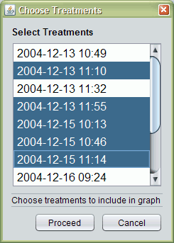
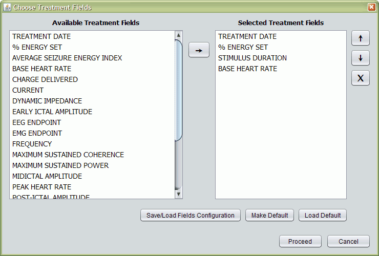
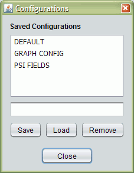
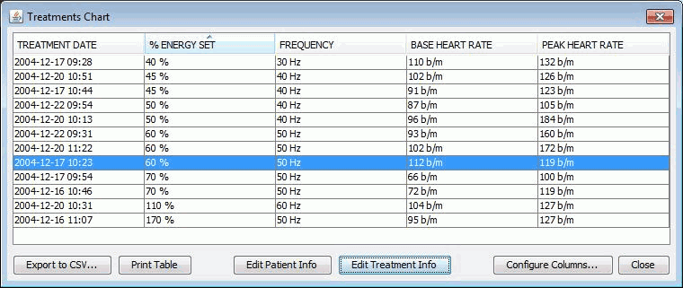
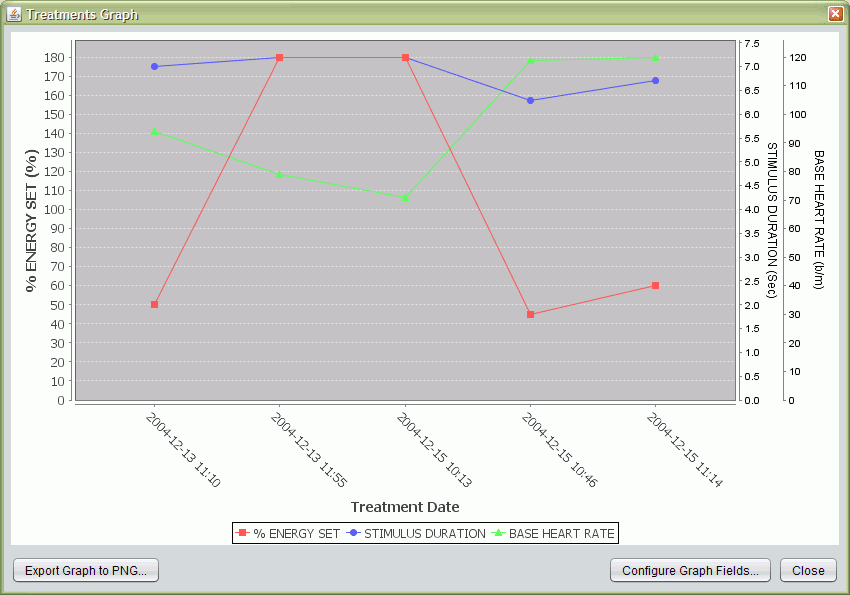
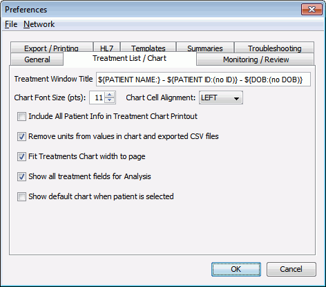

Analysis
On this Page
Usage
From the Analysis menu of the Treatment List you can access the Treatments Chart and Treatments Graph. The operation of these two choices is similar (except for the way the data is presented).
First you select the treatments you want to include in your analysis.

By default, all are selected, but you can Ctrl-click and Shift-click with the mouse to select or deselect individual treatments or a range of treatments. At that point, you will see the Choose Treatment Fields Dialog:

The Available Treatment Fields are gathered automatically from the textual info of the selected treatments (see Database Fields for more details). You can use the → button to add selected fields to the list on the right, which is what will be shown in the chart/graph. The buttons on the far right – ↑, ↓, and X – move the selected field(s) up, down, or remove them, respectively.

You can Make the current selected fields Default so that they'll be automatically loaded when you open this screen, you can Load the Default field configuration, or you can manage named configurations by clicking Save/Load Fields Configuration.
Here you have a list of your saved configurations (DEFAULT is a special name used for the default configuration, and PRINT for the Printable Treatment Chart), and below it, a text field where you can type a new configuration name to save.
Back to the Choose Treatment Fields screen –
Once you click Proceed, the chart or graph will appear.
Treatments Chart

The chart is sortable (by clicking on the column headers), re-arrangeable (drag a column header with the mouse), and you can Export the table of data to CSV (comma-separated value) format to further analyze in Excel or another statistical package.
Clicking Configure Columns will close the chart and show the Treatment Selection and Field Selection dialogs again.
The Edit Treatment Info button lets you edit the selected treatment info. If you modify a field shown in the chart, the chart will be updated.
The Edit Patient Info button lets you edit the patient info without leaving the screen.
Print Table allows you to print the table. If you have a PDF printer installed, such as Adobe Acrobat or Foxit, you can save the printed chart to a PDF file.
On the Analysis menu of the Treatments List, there is also a Default Treatments Chart item: once you set a default configuration in the Choose Treatment Fields dialog, you can quickly call up the default chart using this menu item.
The Printable Treatments Chart menu item is similar, except that it will load a field configuration named PRINT before displaying the table.
Treatments Graph

The graph shows a plot of selected treatment fields across dates (oldest treatments at the left, newest on the right). For each treatment field you selected previously, an axis will be shown, specifying the unit of that field's values, if any. You can hover the mouse over a data point to see its precise value.
A button allows you to Export Graph to PNG, so that it can be included elsewhere.
Clicking Configure Graph Fields will close the graph and show the Treatment Selection and Field Selection dialogs again.
Preferences for Treatment Chart and Graph
The Treatment List/Chart tab in Preferences allows certain configuration of the Analysis functions.

Treatment Window Title
By using the variable syntax from templates, you can customize the title text of the Treatment Window.
Chart Font Size & Cell Alignment
Control how the values shown in the Treatments Chart are displayed.
Include All Patient Info in Treatments Chart Printout
If checked, when you print the chart the entire patient info text will be included on the first page, rather than just the text shown in the window title.
Remove units from values in chart and exported CSV files
If checked, the values of a fields that have a unit (ex. 10 µV²) will be modified to strip off the unit, so that only 10 is displayed. This applies both to the on-screen chart and CSV exports.
Fit Treatments Chart width to page
If checked, chart columns will be resized to make the entire chart fit on the page, rather than spanning multiple pages horizontally.
Show all treatment fields for Analysis
If checked, then even if a field appears in only one treatment, it will be shown in the Choose Treatment Fields dialog when configuring an analysis window. If unchecked, only fields that appear two or more times will be shown.
Show default chart when patient is selected
If checked, when you double-click a patient in the Patient List, instead of going to the Treatment List, you will be taken directly to the default chart.